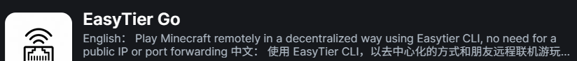

去中心化虚拟局域网
基于 EasyTier 构建虚拟网络，每台设备获得独立虚拟 IP。数据传输优先 P2P 直连，中继只负责节点发现与兜底。
P2P FIRST从下载内核、写配置文件，到分配虚拟 IP 和转发端口，所有步骤都收进游戏界面里。你只需要决定，和谁一起玩。
基于 EasyTier 构建虚拟网络，每台设备获得独立虚拟 IP。数据传输优先 P2P 直连，中继只负责节点发现与兜底。
P2P FIRST不用改路由器、不用端口映射、不用 FRP。朋友输入虚拟 IP 和端口，就能直接进入你的世界。
ZERO PORT FORWARDING对局域网开放、暂停菜单、多人游戏、添加服务器、直接连接——所有常见联机路径都注入了 EasyTier 按钮。
NATIVE UI首次启动自动从 GitHub 下载 EasyTier CLI，13 个镜像依次加速，最后回退原链接，并记录 SHA256 与本地版本。
AUTO DOWNLOAD每个网络对应一个 TOML 配置，如 mc.toml。支持多网络切换、旧版命名自动迁移，也会保留你手工编辑的字段。
17 条 /easytier 命令，覆盖启动、状态、节点、路由、端口转发、配置管理与世界自启动。
默认使用 --no-tun + smoltcp 用户态协议栈，不需要管理员 / root，也不依赖 /dev/net/tun。
Windows、Linux、macOS 的 x86_64 与 arm64 均可使用；Android 会主动检测并引导使用 EasyTier 官方应用。
6 PLATFORMS游戏内线程安全的日志窗口，实时显示下载、启动、节点与转发状态，同时写入日志文件，排错不用猜。
LIVE LOGSEasyTier 在公网上为你和朋友搭起一层虚拟局域网。Minecraft 仍然以为大家在同一个局域网里，而数据则优先走最短的 P2P 路径。
public.easytier.cn:11010 只负责节点发现与兜底转发；能直连时，数据不经过中继。
所有玩家填写相同的网络名称、相同的密码，以及同一个中继服务器。
EasyTier 为每台设备分配 10.126.x.x 地址，并在节点之间交换路由。
策略 A 转发虚拟端口 25565；策略 B 直接连接实际 Minecraft 端口。
朋友在“直接连接”里粘贴 10.126.1.7:25565，就像连接局域网一样。
EasyTier Go 把网络配置做成了熟悉的游戏界面。左侧实时日志，右侧网络参数，底部是启动、转发、保存、清理等操作——和原版界面融为一体。
界面为网页演示，实际布局会随游戏窗口尺寸自适应。配置目录：Forge config/easytier_go/ · Fabric config/easytier-go/
10.126.1.7:25565
来自 EasyTier Go（Fabric）实机运行 · 网络 mc。点击图片放大；图中地址与节点仅作展示。
安装模组、进入世界、填写三个字段，然后把地址发出去。第一次启动时，模组会自动准备好 EasyTier 内核。
把对应加载器的 JAR 放进 mods。Forge 47.x 直接使用；Fabric 还需要安装 Fabric API。
按 Esc 打开暂停菜单，点击 EasyTier 联机配置。也可以从“对局域网开放”界面的 EasyTier 按钮进入。
网络名称和密码必须与朋友完全一致；中继服务器填 public.easytier.cn:11010。
等待虚拟 IP 分配，点击“复制地址”。朋友在多人游戏 → 直接连接中粘贴即可。
把 JAR 放进服务端 mods，启动一次服务器，确认模组已加载。
在控制台执行 /easytier start <网络名称> <中继服务器> [密码]。
执行 /easytier autostart on mc，之后服务器每次加载该世界都会自动拉起 EasyTier。
/easytier status 查看 IP，/easytier peer 查看节点，/easytier route 查看路由。
easytier_go-forge-1.0.3.jar # Forge 1.20.1
easytier_go-fabric-1.0.3.jar # Fabric 1.20.1
fabric-api-0.92.1+1.20.1.jar # Fabric API# 启动虚拟网络
/easytier start mc public.easytier.cn:11010 mypassword
# 世界加载时自动启动
/easytier autostart on mc
# 查看当前状态
/easytier status服务端提供完整的 /easytier 命令树，权限等级 2（管理员 / OP）。搜索或按类别筛选，点击右侧按钮复制示例。
当前版本 1.0.3，面向 Minecraft 1.20.1。Forge 与 Fabric 两个加载器都提供独立构建，功能保持一致。

在 Modrinth 查看MINECRAFT 1.20.1 / FORGE 47.x
e3510db9116b7f552fbde6c535a60b1a9af09ae04b78e8b5b9c432998d5c521bMINECRAFT 1.20.1 / LOADER ≥ 0.15.0
55e49e4cc5cdc7d0507fe4663def36fec5c8f82e01f034bfa23b0e3459a650ec| 平台 | 架构 | 状态 | 说明 |
|---|---|---|---|
| Windows 10 / 11 | x86_64 / arm64 | 支持 | 下载 easytier-core.exe 与 CLI |
| Linux glibc | x86_64 / aarch64 | 支持 | 自动设置可执行权限 |
| macOS 12+ | x86_64 / arm64 | 支持 | 首次运行可能需放行 Gatekeeper |
| Android | — | 不支持 | 请使用 EasyTier 官方 Android 应用 |
| Windows 7 / 32 位 | x86 | 不支持 | 需要 Windows 10 / 11 64 位 |
1.20.1，Java 17+47.x，或 Fabric Loader ≥ 0.15.0 + Fabric APImacOS 如果拦截内核，可执行 xattr -d com.apple.quarantine easytier-core，或在系统设置中允许运行。
关于网络、安全、权限和排错的常见问题。
不需要。EasyTier 会通过中继服务器完成节点发现，并在双方之间建立虚拟网络。你的 Minecraft 仍然监听本机端口，朋友连接的是你的虚拟 IP，不需要路由器做端口映射。
中继主要用于节点发现和中继兜底。双方网络条件允许时会优先建立 P2P 直连，此时游戏数据不经过中继。若只能走中继，数据会经由中继转发；建议使用你信任的中继服务器，并为网络设置密码。
默认不需要。模组使用 --no-tun + smoltcp 用户态协议栈，不依赖 /dev/net/tun，也不需要管理员 / root。只有你自行改成 TUN 模式时，才需要相应的驱动和权限。
Minecraft 模组本身不内置 EasyTier 内核。首次使用时会从 GitHub Releases 获取当前平台对应的 CLI，依次尝试 13 个镜像，最后回退原链接；下载后还会计算并记录 SHA256，方便排查文件完整性问题。
先确认三件事：网络名称完全一致、密码完全一致、中继服务器填写一致。然后查看游戏内日志是否已分配虚拟 IP，点击“刷新”获取节点与路由；确认朋友使用的是你的虚拟 IP 和正确端口。若仍失败，可在“状态面板”查看节点延迟与丢包，并检查本机防火墙。
本模组会主动检测 Android 并阻断，因为 Android 上的 EasyTier 需要 VpnService / Magisk 集成，不能通过桌面 CLI 方式调用。替代方案：在手机上使用 EasyTier 官方应用加入同一个虚拟网络，然后在 Minecraft 中直接连接虚拟 IP。
关闭游戏时模组会自动停止 EasyTier 进程。如果遇到异常退出留下的残留进程，可以在配置界面点击“清理进程”，或在服务器上使用对应的清理操作。
当前 1.0.3 版本面向 Minecraft 1.20.1，提供 Forge 47.x 与 Fabric（Loader ≥ 0.15.0 + Fabric API）两个构建。其他版本请关注项目发布页。